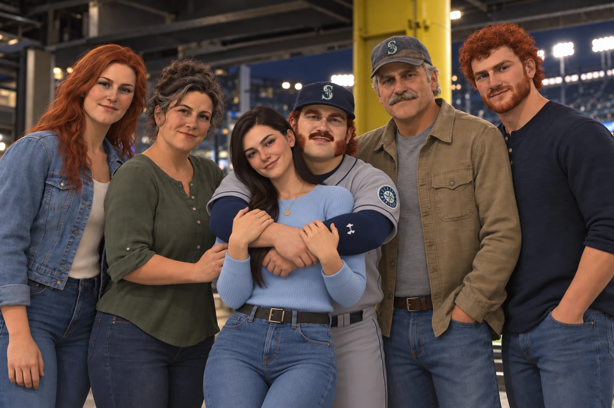

The people, places and turning points behind Tater Tot McGee’s baseball journey.

The call to Seattle, the first phone calls home, and the pressure of joining a pennant race.
Irish roots, an Idaho potato farm and six generations of baseball.